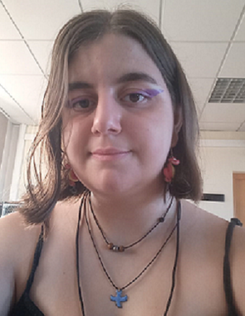

EscritorioVirtual
Sobre mí
Nombre:
Sara
Apellidos:
Fernández González
UO:
UO288195
Correo Electrónico:
uo288195@uniovi.es
Presentación:
Nací en Gijón el 17 de Junio de 2003, mis padres se conocieron haciendo esta carrera pero no la terminaron, espero no seguir su ejemplo.
Foto personal

Más cosas sobre mí:
Aficiones
- Programación
- Leer
- Suspense
- Poesía
- Aventura
- Dibujar
- Escribir
- Jugar a videojuegos
- Gestión de recursos
- Puzles
- Detectives
Gustos musicales
- Extremoduro
- Estopa
- Melendi
- Sabina
- Kiko Veneno
Asignaturas que más me han gustado
- AMD
- Era interesante ver cómo un compilador entiende el texto
- TEC
- Fue una asignatura diferente a las demás
- Computabilidad
- Suponía un desafío tener que resolver razonamientos complejos
- CPM
- Ha sido la asignatura que más útil me ha parecido de momento
- CN
- Me gustan las matemáticas y me resulto una aproximación interesante
Las temperaturas medias de Gijón en los últimos 10 años
| 2022 |
2021 |
2020 |
2019 |
2018 |
2017 |
2016 |
2015 |
2014 |
2013 |
| 16.3 |
17.2 |
15.9 |
16.5 |
15.3 |
16.1 |
17.4 |
14.9 |
15.2 |
14.8 |